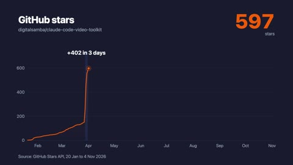

Type a prompt, get a video.
claude-code-video-toolkit turns Claude Code into a video studio. It writes the script, voices it, scores it, generates the shots and renders the MP4, on open models that cost cents.

Made with it
You're On Mute  , The Great Return
, The Great Return , Release 650
, Release 650 , Why is the sky blue?
, Why is the sky blue? , AI hallucinations
, AI hallucinations , A year of stars
, A year of stars and Scheduling a call
and Scheduling a call .
.
Eight of the videos made with it in 2026, every frame generated in this workspace. The playlist on YouTube · the full showcase
It writes the script and voices it.
One file a scene, paced around 140 words a minute. About $0.01 for a minute of voice.
uv run tools/voiceover.py --scene-dir public/audio/scenes --json
01_wild.mp3 5.6 s 139 wpm ok
02_habitat.mp3 5.5 s 130 wpm okPick what you're making
Routes
| A Christmas video of your team | your photos, animated | about $2 |
| A comedy short on a shared topic | an invented cast | about $1.25 |
| Clips that don't freeze | the lesson | $0.08 a link |
| Release notes from source | UI rebuilt as React | cents |
| A product demo with a narrator | a talking-head tile | cents |
| A sprint review | a config file | free |
| A vertical explainer | cards, b-roll, captions | about $0.80 |
| A chart drawn to the voice | SVG charts on cues | free |
Open Claude Code and type /video
Clone the toolkit, install the Python tools with uv, and open Claude Code
inside it. /setup walks through a cloud GPU account, storage and a voice in about five minutes, and
/video starts a project from a template. You need Node.js 22 or later and
Claude Code. The models run on your own Modal or RunPod account, at cost.
git clone https://github.com/digitalsamba/claude-code-video-toolkit.git
cd claude-code-video-toolkit
uv sync
claude